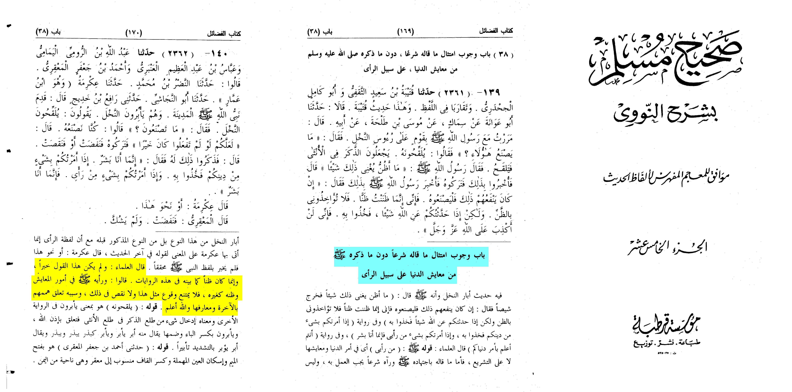

The hadith in question
Anas reported that Allah's Messenger (ﷺ) happened to pass by the people who had been busy in
grafting the trees. Thereupon he said:
If you were not to do it, it might be good for you. (So they abandoned this practice) and there
was a decline in the yield. He (the Holy Prophet) happened to pass by them (and said):
What has gone wrong with your trees? They said: You said so and so. Thereupon he said:
You have better knowledge (of a technical skill) in the affairs of the world.
Here these are the thoughts of the prophet that aren’t infatiable we Muslims believe that the
prophet is totally protected when talking about religion or God (Qur’ān 53:3-4).
However what concerns this worldly life no he can be wrong.
Chapter heading: “Following what he (PBUH) legislated without what he mentioned about
the affairs of the worldly life”
“Scholars have said: and this saying wasn’t a legislation it was only a thought he had
like the narrations showed, they said his opinion (PBUH) in worldly affairs is not like
his thoughts (PBUH) so there is no objection for an incident like this to happen.”
-Sharh Sahih Muslim an-nawawi (15/169-170)

Their is a varriation of narration that shows it was just a thought or an idea of worldly life he had